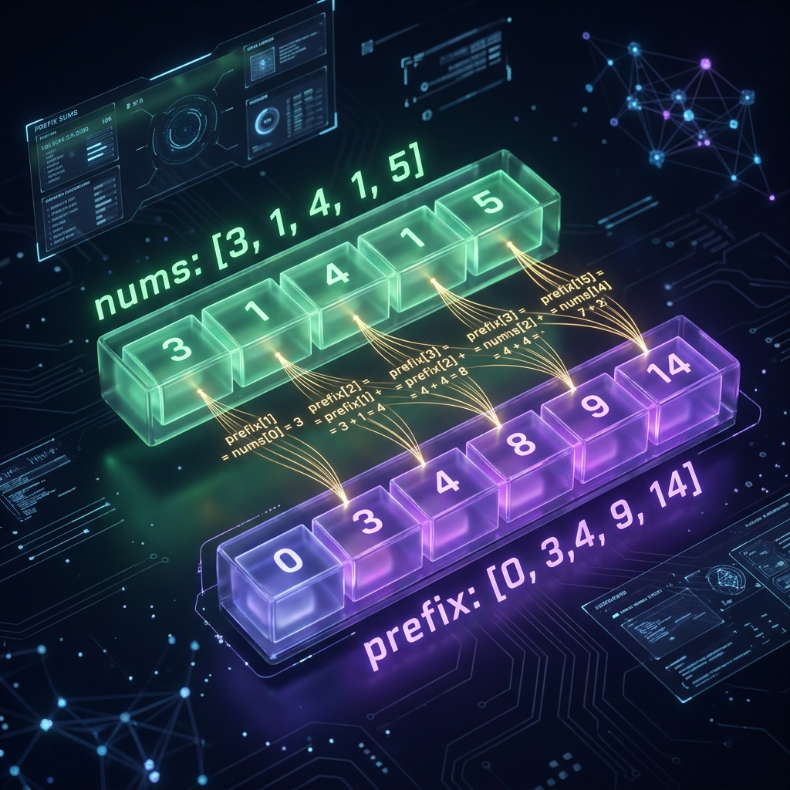
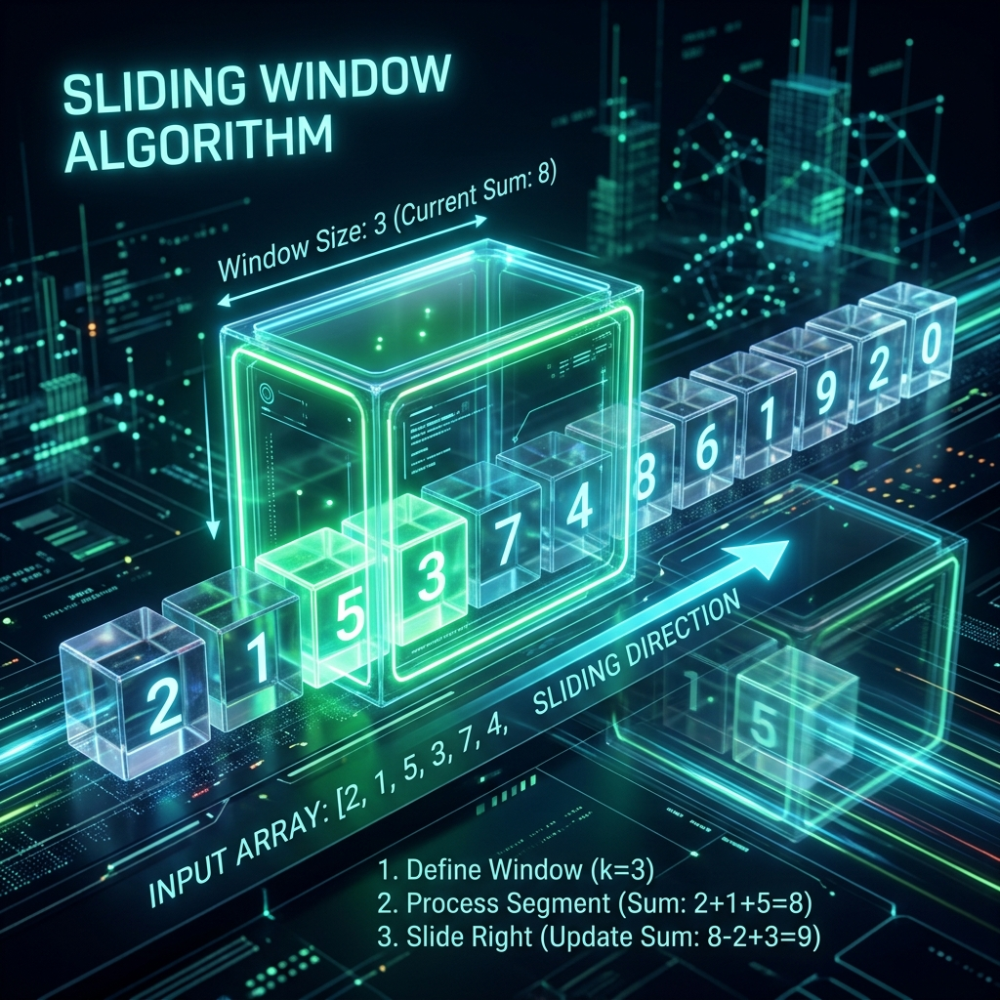
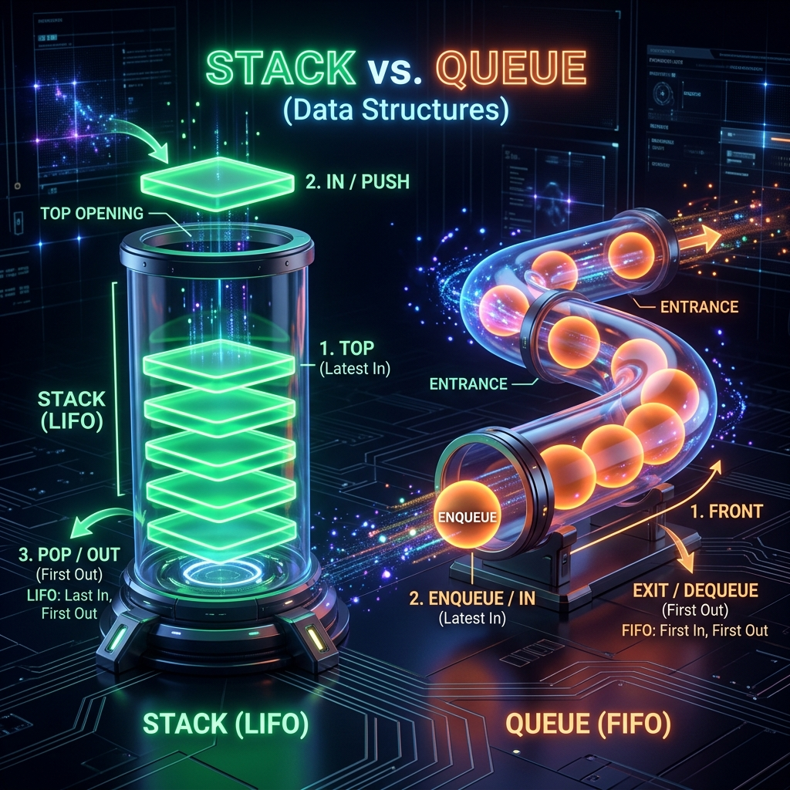
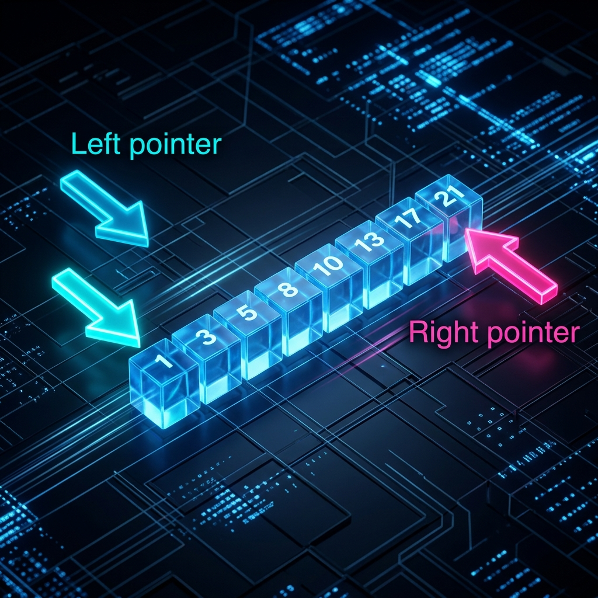

Thay vì học thuộc lòng từng bài toán, pattern-based thinking giúp bạn nhận ra cấu trúc ẩn sau mỗi bài toán và áp dụng giải pháp đã biết. Trong Go, sức mạnh của các pattern còn được khuếch đại bởi slice nhanh, map built-in O(1), và interface linh hoạt.
Document này trình bày 8 pattern cốt lõi theo cấu trúc:
Định nghĩa → Diagram → Code (basic→expert) → Complexity → Pitfalls. Tất cả ví dụ đều dùng Go idioms chuẩn.
8 Pattern Cốt Lõi
Khi nào dùng pattern nào?
Chiến lược học: Mỗi pattern có signature dấu hiệu nhận biết. Khi đọc đề bài, hỏi: "Có cần subarray liên tiếp không?" → Sliding Window. "Cần tra cứu complement không?" → HashMap. "Có linked list + cycle không?" → Fast/Slow Pointers.
Hash Map (map[K]V trong Go) lưu cặp key-value với tra cứu, chèn, xóa trung bình O(1) nhờ
hàm băm (hash function). Hash Set (map[K]struct{}) chỉ lưu key — dùng để kiểm tra tồn tại và
deduplication.
Pattern này giải quyết bài toán: đếm tần suất, tìm phần bù (complement), nhóm phần tử, xây dựng index ngược, loại trùng lặp. Go không có
built-in Set type — ta dùng map[T]struct{} với zero-cost value.
Khi nào dùng HashMap/Set?
Đếm số lần xuất hiện của phần tử. freq[x]++. Dùng cho: anagram, top-k elements.
Tìm phần bù: biết target - x, cần kiểm tra xem đã thấy chưa. Two Sum, k-diff pairs.
Nhóm phần tử theo key: group anagrams, sort by frequency.
Loại trùng lặp, kiểm tra tập con. map[T]struct{} tiết kiệm hơn map[T]bool.
📝 Example 1 — Two Sum (Basic)
// TwoSum: tìm 2 chỉ số có tổng = target // Pattern: complement lookup — với mỗi nums[i], kiểm tra target-nums[i] đã xuất hiện chưa func twoSum(nums []int, target int) []int { seen := make(map[int]int) // value → index for i, n := range nums { complement := target - n if j, ok := seen[complement]; ok { return []int{j, i} } seen[n] = i // lưu sau khi check để tránh dùng cùng phần tử } return nil } // Test // twoSum([2,7,11,15], 9) → [0,1] (2+7=9) // twoSum([3,2,4], 6) → [1,2] (2+4=6)
📝 Example 2 — Group Anagrams (Advanced)
// GroupAnagrams: nhóm các anagram lại với nhau // Key insight: dùng sorted string hoặc [26]byte frequency array làm key func groupAnagrams(strs []string) [][]string { groups := make(map[[26]byte][]string) for _, s := range strs { var key [26]byte for _, ch := range s { key[ch-'a']++ // frequency fingerprint } groups[key] = append(groups[key], s) } result := make([][]string, 0, len(groups)) for _, v := range groups { result = append(result, v) } return result } // Tại sao [26]byte thay vì sort? // sort: O(k log k) per string → total O(n·k·log k) // [26]byte: O(k) per string → total O(n·k) ← nhanh hơn
📝 Example 3 — LRU Cache (Expert)
// LRU Cache: HashMap + Doubly Linked List // HashMap cho O(1) lookup; DLL cho O(1) insert/delete ở đầu/cuối type Node struct { key, val int prev, next *Node } type LRUCache struct { capacity int cache map[int]*Node head *Node // sentinel: MRU end tail *Node // sentinel: LRU end } func Constructor(capacity int) LRUCache { head := &Node{} tail := &Node{} head.next = tail tail.prev = head return LRUCache{ capacity: capacity, cache: make(map[int]*Node, capacity), head: head, tail: tail, } } func (c *LRUCache) remove(n *Node) { n.prev.next = n.next n.next.prev = n.prev } func (c *LRUCache) insertFront(n *Node) { n.next = c.head.next n.prev = c.head c.head.next.prev = n c.head.next = n } func (c *LRUCache) Get(key int) int { node, ok := c.cache[key] if !ok { return -1 } c.remove(node) c.insertFront(node) // move to MRU return node.val } func (c *LRUCache) Put(key, value int) { if node, ok := c.cache[key]; ok { node.val = value c.remove(node) c.insertFront(node) return } if len(c.cache) >= c.capacity { lru := c.tail.prev // evict least recently used c.remove(lru) delete(c.cache, lru.key) } node := &Node{key: key, val: value} c.cache[key] = node c.insertFront(node) } // Bonus: Go 1.23+ có maps.Clone, maps.Keys, slices.Collect tiện hơn
📝 Example 4 — Top K Frequent Elements (Expert)
// TopKFrequent: tìm k phần tử xuất hiện nhiều nhất — Bucket Sort O(n) // Thay vì heap O(n log k), dùng bucket sort: index = frequency func topKFrequent(nums []int, k int) []int { // Bước 1: đếm frequency freq := make(map[int]int) for _, n := range nums { freq[n]++ } // Bước 2: bucket[i] = các số xuất hiện đúng i lần buckets := make([][]int, len(nums)+1) for val, cnt := range freq { buckets[cnt] = append(buckets[cnt], val) } // Bước 3: duyệt từ bucket có freq cao nhất result := make([]int, 0, k) for i := len(buckets) - 1; i >= 0 && len(result) < k; i-- { result = append(result, buckets[i]...) } return result[:k] } // Time: O(n) Space: O(n) — tốt hơn heap O(n log k)
Pitfall phổ biến: map trong Go không safe cho concurrent access. Dùng
sync.RWMutex hoặc sync.Map khi có goroutine đọc/ghi đồng thời. Ngoài ra, đừng assume thứ tự duyệt
range map — thứ tự là ngẫu nhiên trong Go.
Prefix Sum (tổng tiền tố) là mảng prefix[i] lưu tổng của tất cả phần tử từ index 0 đến i-1. Công thức:
prefix[i] = prefix[i-1] + nums[i-1].
Sau khi xây dựng, ta có thể tính tổng bất kỳ đoạn [l, r] trong O(1): sum(l,r) = prefix[r+1] - prefix[l]. Cực
kỳ mạnh khi cần trả lời nhiều range query.

📝 Example 1 — Range Sum Query (Basic)
// NumArray: xây prefix sum, query O(1) type NumArray struct { prefix []int } func NewNumArray(nums []int) *NumArray { prefix := make([]int, len(nums)+1) for i, v := range nums { prefix[i+1] = prefix[i] + v } return &NumArray{prefix: prefix} } // SumRange: O(1) — không cần loop func (na *NumArray) SumRange(left, right int) int { return na.prefix[right+1] - na.prefix[left] } // arr := NewNumArray([]int{3,1,4,1,5,9,2}) // arr.SumRange(1, 4) → 11 (1+4+1+5)
📝 Example 2 — Subarray Sum Equals K (Advanced)
// SubarraySumEqualsK: đếm số subarray có tổng = k // Key insight: prefix[j] - prefix[i] = k → cần prefix[i] = prefix[j] - k // Dùng HashMap đếm số lần prefix sum đã xuất hiện func subarraySum(nums []int, k int) int { count := make(map[int]int) count[0] = 1 // base case: prefix sum = 0 xuất hiện 1 lần (empty prefix) sum, result := 0, 0 for _, n := range nums { sum += n // Nếu (sum - k) đã thấy, có count[sum-k] subarray kết thúc ở đây với tổng = k result += count[sum-k] count[sum]++ } return result } // nums=[1,1,1], k=2 → 2 (subarray [0:2] và [1:3])
📝 Example 3 — 2D Prefix Sum (Expert)
// NumMatrix: 2D prefix sum — query rectangle sum O(1) // prefix[i][j] = tổng tất cả phần tử trong rectangle (0,0) → (i-1,j-1) type NumMatrix struct { prefix [][]int } func NewNumMatrix(matrix [][]int) *NumMatrix { m, n := len(matrix), len(matrix[0]) prefix := make([][]int, m+1) for i := range prefix { prefix[i] = make([]int, n+1) } for i := 1; i <= m; i++ { for j := 1; j <= n; j++ { prefix[i][j] = matrix[i-1][j-1] + prefix[i-1][j] + // trên prefix[i][j-1] - // trái prefix[i-1][j-1] // bỏ phần đã cộng đôi (góc trên-trái) } } return &NumMatrix{prefix: prefix} } // SumRegion: O(1) — inclusion-exclusion func (nm *NumMatrix) SumRegion(r1, c1, r2, c2 int) int { return nm.prefix[r2+1][c2+1] - nm.prefix[r1][c2+1] - nm.prefix[r2+1][c1] + nm.prefix[r1][c1] } // Công thức: A(r2,c2) - A(r1-1,c2) - A(r2,c1-1) + A(r1-1,c1-1)
Nhận diện Pattern: Khi đề bài có nhiều query về range sum / range count và mảng không thay đổi → nghĩ ngay đến Prefix Sum. Nếu mảng thay đổi → dùng Segment Tree hoặc BIT (Fenwick Tree).
Sliding Window duy trì một "cửa sổ" [left, right] trên mảng/chuỗi và di chuyển nó theo điều kiện, tránh tính lại từ đầu mỗi lần. Có hai biến thể: Fixed Size (kích thước cố định k) và Variable Size (kích thước thay đổi theo điều kiện).

📝 Example 1 — Max Sum Subarray k (Fixed Window)
// MaxSumSubarrayK: tổng lớn nhất của subarray kích thước k // Pattern: cửa sổ cố định — thêm phần tử mới, bỏ phần tử cũ nhất func maxSumSubarrayK(nums []int, k int) int { if len(nums) < k { return 0 } // Khởi tạo cửa sổ đầu tiên windowSum := 0 for i := 0; i < k; i++ { windowSum += nums[i] } maxSum := windowSum // Trượt cửa sổ: +phần tử mới ở phải, -phần tử cũ ở trái for i := k; i < len(nums); i++ { windowSum += nums[i] - nums[i-k] if windowSum > maxSum { maxSum = windowSum } } return maxSum } // nums=[2,1,5,1,3,2], k=3 → 9 (subarray [5,1,3])
📝 Example 2 — Longest Substring Without Repeating (Variable Window)
// LengthOfLongestSubstring: cửa sổ co giãn + hashmap // right: mở rộng; left: thu nhỏ khi gặp ký tự trùng func lengthOfLongestSubstring(s string) int { lastSeen := make(map[byte]int) // char → last index left, best := 0, 0 for right := 0; right < len(s); right++ { ch := s[right] // Nếu đã thấy ch trong window hiện tại → dịch left if idx, ok := lastSeen[ch]; ok && idx >= left { left = idx + 1 } lastSeen[ch] = right if size := right - left + 1; size > best { best = size } } return best } // "abcabcbb" → 3 ("abc") // "pwwkew" → 3 ("wke")
📝 Example 3 — Minimum Window Substring (Expert)
// MinWindow: tìm substring ngắn nhất trong s chứa tất cả ký tự của t // Approach: cửa sổ + 2 map + biến "formed" để track điều kiện func minWindow(s, t string) string { need := make(map[byte]int) for i := 0; i < len(t); i++ { need[t[i]]++ } have, total := 0, len(need) // số ký tự đủ count vs cần window := make(map[byte]int) best := [3]int{-1, 0, 0} // {length, l, r} left := 0 for right := 0; right < len(s); right++ { ch := s[right] window[ch]++ // check nếu ký tự này đã đủ count trong window if cnt, ok := need[ch]; ok && window[ch] == cnt { have++ } // Thu hẹp từ trái khi đã có đủ tất cả ký tự for have == total { // Cập nhật kết quả tốt nhất if best[0] == -1 || right-left+1 < best[0] { best = [3]int{right - left + 1, left, right} } lch := s[left] window[lch]-- if cnt, ok := need[lch]; ok && window[lch] < cnt { have-- } left++ } } if best[0] == -1 { return "" } return s[best[1]:best[2]+1] } // s="ADOBECODEBANC", t="ABC" → "BANC" Time: O(|s|+|t|)
Stack là cấu trúc dữ liệu LIFO (Last In First Out). Trong Go, slice được dùng làm stack với
append (push) và slice[:len-1] (pop). Stack giải quyết bài toán cần "nhớ" trạng thái trước đó: ngoặc đơn, DFS
iterative, expression evaluation, backtracking.

Go Stack Implementation
// Generic Stack dùng Go 1.18+ generics type Stack[T any] struct { data []T } func (s *Stack[T]) Push(v T) { s.data = append(s.data, v) } func (s *Stack[T]) Len() int { return len(s.data) } func (s *Stack[T]) IsEmpty() bool { return len(s.data) == 0 } func (s *Stack[T]) Peek() (T, bool) { var zero T if s.IsEmpty() { return zero, false } return s.data[len(s.data)-1], true } func (s *Stack[T]) Pop() (T, bool) { var zero T if s.IsEmpty() { return zero, false } n := len(s.data) - 1 v := s.data[n] s.data = s.data[:n] return v, true }
📝 Example 1 — Valid Parentheses (Basic)
func isValid(s string) bool { stack := make([]byte, 0, len(s)) pair := map[byte]byte{')': '(', ']': '[', '}': '{'} for i := 0; i < len(s); i++ { ch := s[i] if ch == '(' || ch == '[' || ch == '{' { stack = append(stack, ch) // push opening bracket } else { if len(stack) == 0 || stack[len(stack)-1] != pair[ch] { return false } stack = stack[:len(stack)-1] // pop } } return len(stack) == 0 } // "()[]{}" → true | "([)]" → false | "{[]}" → true
📝 Example 2 — Min Stack O(1) (Advanced)
// MinStack: push/pop/top/getMin đều O(1) // Trick: dùng 2 stack — stack chính + minStack (luôn có min ở đỉnh) type MinStack struct { stack []int minStack []int } func (ms *MinStack) Push(val int) { ms.stack = append(ms.stack, val) if len(ms.minStack) == 0 || val <= ms.minStack[len(ms.minStack)-1] { ms.minStack = append(ms.minStack, val) } } func (ms *MinStack) Pop() { top := ms.stack[len(ms.stack)-1] ms.stack = ms.stack[:len(ms.stack)-1] if top == ms.minStack[len(ms.minStack)-1] { ms.minStack = ms.minStack[:len(ms.minStack)-1] } } func (ms *MinStack) Top() int { return ms.stack[len(ms.stack)-1] } func (ms *MinStack) GetMin() int { return ms.minStack[len(ms.minStack)-1] }
📝 Example 3 — Largest Rectangle in Histogram (Expert)
// LargestRectangleArea: diện tích hình chữ nhật lớn nhất trong histogram // Dùng monotonic increasing stack — khi gặp bar thấp hơn, pop và tính area func largestRectangleArea(heights []int) int { stack := make([]int, 0) // stack of indices maxArea := 0 heights = append(heights, 0) // sentinel để flush stack cuối for i, h := range heights { for len(stack) > 0 && heights[stack[len(stack)-1]] > h { height := heights[stack[len(stack)-1]] stack = stack[:len(stack)-1] width := i if len(stack) > 0 { width = i - stack[len(stack)-1] - 1 } if area := height * width; area > maxArea { maxArea = area } } stack = append(stack, i) } return maxArea } // heights=[2,1,5,6,2,3] → 10 Time: O(n) Space: O(n)
Queue là cấu trúc dữ liệu FIFO (First In First Out). Trong Go, container/list hoặc slice
với con trỏ head/tail được dùng. Queue là nền tảng của BFS (Breadth-First Search), xử lý theo thứ tự, và sliding window
maximum với Deque (Double-ended queue).
📝 Example 1 — BFS Level Order Traversal (Basic)
type TreeNode struct { Val int Left, Right *TreeNode } // LevelOrder: BFS với queue — trả về từng level func levelOrder(root *TreeNode) [][]int { if root == nil { return nil } result := [][]int{} queue := []*TreeNode{root} for len(queue) > 0 { levelSize := len(queue) level := make([]int, 0, levelSize) for i := 0; i < levelSize; i++ { node := queue[0] queue = queue[1:] // dequeue level = append(level, node.Val) if node.Left != nil { queue = append(queue, node.Left) } if node.Right != nil { queue = append(queue, node.Right) } } result = append(result, level) } return result } // Time: O(n) Space: O(n) — queue có thể chứa toàn bộ leaf level
📝 Example 2 — Sliding Window Maximum với Deque (Expert)
// MaxSlidingWindow: tìm max trong mỗi window size k — O(n) // Deque lưu indices, duy trì monotonic decreasing order của values // Front của deque luôn là index của max trong window hiện tại func maxSlidingWindow(nums []int, k int) []int { deque := make([]int, 0, k) // stores indices result := make([]int, 0, len(nums)-k+1) for i, v := range nums { // Bỏ index đã ra ngoài window if len(deque) > 0 && deque[0] <= i-k { deque = deque[1:] // pop front } // Bỏ các index nhỏ hơn v từ phía sau (không thể là max) for len(deque) > 0 && nums[deque[len(deque)-1]] < v { deque = deque[:len(deque)-1] // pop back } deque = append(deque, i) // Ghi kết quả khi window đủ k phần tử if i >= k-1 { result = append(result, nums[deque[0]]) } } return result } // [1,3,-1,-3,5,3,6,7], k=3 → [3,3,5,5,6,7] Time: O(n)
📝 Example 3 — BFS Shortest Path in Grid (Advanced)
// ShortestPath: BFS trong grid 0/1, tìm đường ngắn nhất từ (0,0) đến (n-1,n-1) func shortestPathBinaryMatrix(grid [][]int) int { n := len(grid) if grid[0][0] == 1 || grid[n-1][n-1] == 1 { return -1 } dirs := [][2]int{{-1,-1},{-1,0},{-1,1},{0,-1},{0,1},{1,-1},{1,0},{1,1}} type pos = [2]int queue := []pos{{0, 0}} grid[0][0] = 1 // mark visited steps := 1 for len(queue) > 0 { for sz := len(queue); sz > 0; sz-- { cur := queue[0]; queue = queue[1:] if cur[0] == n-1 && cur[1] == n-1 { return steps } for _, d := range dirs { r, c := cur[0]+d[0], cur[1]+d[1] if r >= 0 && r < n && c >= 0 && c < n && grid[r][c] == 0 { grid[r][c] = 1 queue = append(queue, pos{r, c}) } } } steps++ } return -1 }
Opposite Ends: left = 0, right = n-1, di chuyển vào nhau — dùng với mảng sort (two sum, 3sum, palindrome). Same Direction: slow + fast, cùng chiều — dùng để remove duplicates, partition.

📝 Example 1 — Container With Most Water (Advanced)
// MaxWater: diện tích nước lớn nhất giữa 2 thanh // Greedy: luôn di chuyển con trỏ có chiều cao thấp hơn func maxArea(height []int) int { left, right := 0, len(height)-1 best := 0 for left < right { h := height[left] if height[right] < h { h = height[right] } area := h * (right - left) if area > best { best = area } if height[left] <= height[right] { left++ // di chuyển cái thấp hơn để hi vọng tăng h } else { right-- } } return best } // [1,8,6,2,5,4,8,3,7] → 49 Time: O(n) Space: O(1)
📝 Example 2 — 3Sum (Expert)
// ThreeSum: tìm tất cả bộ 3 có tổng = 0, không trùng // Fix nums[i], dùng Two Pointers cho phần còn lại // Sort trước để skip duplicates dễ dàng func threeSum(nums []int) [][]int { sort.Ints(nums) result := [][]int{} for i := 0; i < len(nums)-2; i++ { // Skip duplicates cho i if i > 0 && nums[i] == nums[i-1] { continue } // Early termination: nums[i] > 0 → không thể có tổng = 0 if nums[i] > 0 { break } left, right := i+1, len(nums)-1 for left < right { sum := nums[i] + nums[left] + nums[right] switch { case sum == 0: result = append(result, []int{nums[i], nums[left], nums[right]}) for left < right && nums[left] == nums[left+1] { left++ } for left < right && nums[right] == nums[right-1] { right-- } left++; right-- case sum < 0: left++ default: right-- } } } return result } // [-1,0,1,2,-1,-4] → [[-1,-1,2],[-1,0,1]] Time: O(n²)
Fast pointer di chuyển 2 bước/lần, Slow pointer di chuyển 1 bước/lần. Nếu có cycle, fast và slow sẽ
gặp nhau trong vòng lặp. Nếu không có cycle, fast sẽ đến nil trước. Không cần thêm memory (O(1) space).
📝 Example 1 — Detect Cycle in Linked List (Basic)
type ListNode struct { Val int Next *ListNode } // HasCycle: Floyd's algorithm — O(n) time, O(1) space func hasCycle(head *ListNode) bool { slow, fast := head, head for fast != nil && fast.Next != nil { slow = slow.Next // 1 bước fast = fast.Next.Next // 2 bước if slow == fast { return true } } return false } // Tìm điểm bắt đầu cycle (cycle entry point) func detectCycle(head *ListNode) *ListNode { slow, fast := head, head for fast != nil && fast.Next != nil { slow = slow.Next fast = fast.Next.Next if slow == fast { // Phase 2: reset slow về head, giữ fast tại meeting point // Cả 2 đi 1 bước → gặp nhau tại cycle entry slow = head for slow != fast { slow = slow.Next fast = fast.Next } return slow } } return nil }
📝 Example 2 — Find Middle of Linked List (Basic)
// MiddleNode: tìm node giữa — khi fast đến cuối, slow ở giữa func middleNode(head *ListNode) *ListNode { slow, fast := head, head for fast != nil && fast.Next != nil { slow = slow.Next fast = fast.Next.Next } return slow } // 1→2→3→4→5 → node(3) (fast tới nil sau 2 bước, slow ở 3) // 1→2→3→4 → node(3) (second middle khi có 2 nodes giữa)
📝 Example 3 — Happy Number (Advanced)
// IsHappy: áp dụng Fast&Slow trên chuỗi số // Happy number: lặp lại tổng bình phương chữ số → cuối về 1 // Unhappy: sẽ tạo cycle không qua 1 → Fast&Slow phát hiện func sumOfSquares(n int) int { s := 0 for n > 0 { d := n % 10 s += d * d n /= 10 } return s } func isHappy(n int) bool { slow, fast := n, sumOfSquares(n) for fast != 1 && slow != fast { slow = sumOfSquares(slow) fast = sumOfSquares(sumOfSquares(fast)) } return fast == 1 } // n=19: 1²+9²=82 → 8²+2²=68 → 6²+8²=100 → 1²=1 → happy! // n=2: 2→4→16→37→58→89→145→42→20→4 cycle → unhappy
📝 Example 4 — Palindrome Linked List (Expert)
// IsPalindrome: O(n) time, O(1) space // 1. Tìm middle (Fast&Slow) // 2. Reverse phần sau middle // 3. Compare 2 nửa // 4. Restore list (optional) func isPalindrome(head *ListNode) bool { if head == nil || head.Next == nil { return true } // Step 1: tìm middle slow, fast := head, head for fast.Next != nil && fast.Next.Next != nil { slow = slow.Next fast = fast.Next.Next } // Step 2: reverse phần sau secondHalf := reverse(slow.Next) // Step 3: so sánh p1, p2 := head, secondHalf result := true for p2 != nil { if p1.Val != p2.Val { result = false; break } p1 = p1.Next; p2 = p2.Next } slow.Next = reverse(secondHalf) // restore return result } func reverse(head *ListNode) *ListNode { var prev *ListNode for head != nil { next := head.Next head.Next = prev prev = head head = next } return prev }
Monotonic Increasing Stack: phần tử từ bottom đến top tăng dần. Monotonic Decreasing Stack: giảm dần. Khi chèn phần tử mới vi phạm thứ tự, pop ra và xử lý — mỗi phần tử push/pop đúng 1 lần → O(n) amortized.
Dùng để giải: Next Greater Element, Previous Smaller Element, Trapping Rain Water, Sum of Subarray Minimums.
📝 Example 1 — Next Greater Element I (Basic)
// NextGreaterElement: tìm NGE cho mỗi phần tử // Monotonic decreasing stack — pop khi tìm thấy NGE func nextGreaterElement(nums1, nums2 []int) []int { nge := make(map[int]int) stack := []int{} for _, v := range nums2 { // Pop và ghi NGE cho tất cả phần tử nhỏ hơn v for len(stack) > 0 && stack[len(stack)-1] < v { top := stack[len(stack)-1] stack = stack[:len(stack)-1] nge[top] = v } stack = append(stack, v) } // Phần tử còn trong stack không có NGE → -1 for _, v := range stack { nge[v] = -1 } result := make([]int, len(nums1)) for i, v := range nums1 { result[i] = nge[v] } return result }
📝 Example 2 — Daily Temperatures (Advanced)
// DailyTemperatures: tìm số ngày chờ đến ngày ấm hơn // Stack lưu index thay vì value — tính khoảng cách khi pop func dailyTemperatures(temps []int) []int { result := make([]int, len(temps)) stack := []int{} // stores indices for i, t := range temps { for len(stack) > 0 && temps[stack[len(stack)-1]] < t { prevIdx := stack[len(stack)-1] stack = stack[:len(stack)-1] result[prevIdx] = i - prevIdx // số ngày chờ } stack = append(stack, i) } // Còn trong stack: không có ngày ấm hơn → result[i] = 0 (zero value) return result } // [73,74,75,71,69,72,76,73] → [1,1,4,2,1,1,0,0]
📝 Example 3 — Trapping Rain Water (Expert)
// TrapRainWater: tính tổng nước có thể chứa // Approach 1: Monotonic Stack O(n) time O(n) space // Approach 2: Two Pointers O(n) time O(1) space ← preferred // Approach 2: Two Pointers (optimal) func trap(height []int) int { left, right := 0, len(height)-1 leftMax, rightMax := 0, 0 water := 0 for left < right { if height[left] < height[right] { if height[left] >= leftMax { leftMax = height[left] } else { water += leftMax - height[left] // đủ tường cao bên phải } left++ } else { if height[right] >= rightMax { rightMax = height[right] } else { water += rightMax - height[right] } right-- } } return water } // Approach 1: Monotonic Stack — tính từng "layer" nước nằm ngang func trapStack(height []int) int { stack := []int{} water := 0 for i, h := range height { for len(stack) > 0 && height[stack[len(stack)-1]] < h { bottom := stack[len(stack)-1] stack = stack[:len(stack)-1] if len(stack) == 0 { break } left := stack[len(stack)-1] w := i - left - 1 boundH := height[left] if h < boundH { boundH = h } water += w * (boundH - height[bottom]) } stack = append(stack, i) } return water } // [0,1,0,2,1,0,1,3,2,1,2,1] → 6 Time: O(n) Space: O(1)
📝 Example 4 — Sum of Subarray Minimums (Expert)
// SumSubarrayMins: tổng min của tất cả subarray — O(n) // Key: với mỗi arr[i], tính số subarray mà arr[i] là min // left[i] = khoảng cách đến PSE (Previous Smaller Element) // right[i] = khoảng cách đến NSE (Next Smaller or Equal) // contribution[i] = arr[i] * left[i] * right[i] func sumSubarrayMins(arr []int) int { const mod = 1_000_000_007 n := len(arr) left := make([]int, n) // distance to previous smaller right := make([]int, n) // distance to next smaller or equal stack := []int{} // Compute left[i] — monotonic increasing stack for i := 0; i < n; i++ { for len(stack) > 0 && arr[stack[len(stack)-1]] >= arr[i] { stack = stack[:len(stack)-1] } if len(stack) == 0 { left[i] = i + 1 } else { left[i] = i - stack[len(stack)-1] } stack = append(stack, i) } stack = stack[:0] // Compute right[i] — right to left for i := n - 1; i >= 0; i-- { for len(stack) > 0 && arr[stack[len(stack)-1]] > arr[i] { stack = stack[:len(stack)-1] } if len(stack) == 0 { right[i] = n - i } else { right[i] = stack[len(stack)-1] - i } stack = append(stack, i) } result := 0 for i := 0; i < n; i++ { result = (result + arr[i]*left[i]*right[i]) % mod } return result } // [3,1,2,4] → 17 (subarray mins: 3,1,1,1,2,1,3,1,2,4 = 17)
So sánh: Stack thường vs Monotonic Stack
Không có ràng buộc về thứ tự phần tử. Dùng cho: DFS, undo/redo, expression evaluation, backtracking.
Duy trì tăng/giảm dần. Mỗi phần tử push/pop đúng 1 lần → O(n). Dùng cho: NGE, NSE, range min/max queries.
📚 GitHub Repositories
🌐 Online Platforms
📰 Bài viết kỹ thuật chất lượng cao
📊 Complexity Cheat Sheet
| Pattern | Time | Space | Bài toán điển hình | Dấu hiệu nhận biết |
|---|---|---|---|---|
| HashMap/Set | O(n) | O(n) | Two Sum, Anagram, LRU |
Cần tra cứu nhanh, đếm tần suất |
| Prefix Sum | O(1) query | O(n) | Range Sum, Subarray Sum=K |
Nhiều range query, mảng bất biến |
| Sliding Window | O(n) | O(1)~O(k) | Max Subarray, Min Window |
Subarray/string liên tiếp, window |
| Stack | O(n) | O(n) | Valid Parens, Calculator |
Cần "nhớ" state trước, LIFO |
| Queue | O(n) | O(n) | BFS, Level Order |
Xử lý theo thứ tự, FIFO, graph |
| Two Pointers | O(n) | O(1) | 3Sum, Container Water |
Mảng đã sort, cần pair/triplet |
| Fast & Slow | O(n) | O(1) | Cycle, Middle Node |
Linked list, cycle detection |
| Monotonic Stack | O(n) amortized | O(n) | NGE, Trapping Rain, Histogram |
Cần nearest larger/smaller element |
Lộ trình học đề xuất: Hash Maps → Two Pointers → Sliding Window → Stack → Prefix Sums → Queue → Fast & Slow → Monotonic Stack. Mỗi pattern học ít nhất 5 bài LeetCode trước khi chuyển sang bài tiếp theo.